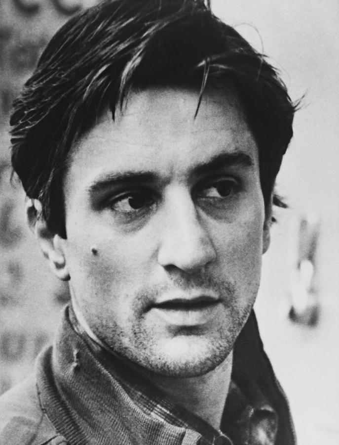
Robert De Niro
Actor
Known for intense character-driven performances and remarkable versatility.
Notable:Taxi Driver • Raging Bull • The Godfather Part II
From powerful monologues to silent expressions, great performers make fictional characters feel real.
Cinema is a global language, and great performers exist in every film industry. Their performances can cross languages, cultures and generations.

Actor
Known for intense character-driven performances and remarkable versatility.
Notable:Taxi Driver • Raging Bull • The Godfather Part II
Actress
Celebrated for her extraordinary range, character transformation and emotional depth.
Notable:Sophie's Choice • The Devil Wears Prada

Actor
Renowned for intense performances, powerful screen presence and memorable dramatic roles.
Notable:The Godfather • Scarface • Scent of a Woman
Actor
Celebrated for his extraordinary commitment to complex characters and deeply immersive performances.
Notable:There Will Be Blood • Lincoln • Gangs of New York
Actor
Known for charismatic performances, sharp dialogue and sophisticated portrayals of complex characters.
Notable:Inglourious Basterds • Django Unchained
Actress
Known for her versatility and emotionally nuanced performances across drama, comedy and science fiction.
Notable:Arrival • The Fighter • Enchanted
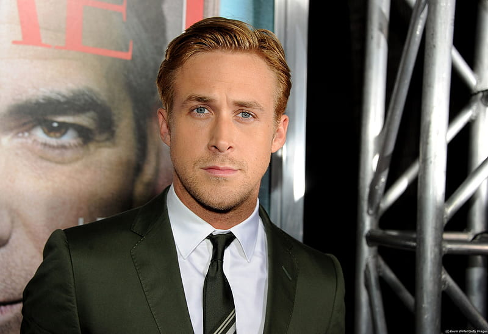
Actor
Recognized for combining subtle dramatic performances with comedy, romance and musical roles.
Notable:Drive • La La Land • The Nice Guys
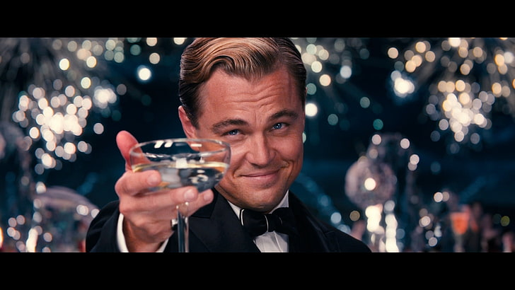
Actor
Known for intense dramatic performances and his collaborations with major contemporary filmmakers.
Notable:Titanic • Inception • The Revenant
Actress
Known for expressive performances and a versatile range spanning comedy, drama and musical cinema.
Notable:La La Land • The Favourite • Poor Things
Actor
known for his powerful dramatic performances, intense screen presence, and two Academy Award wins.
Notable:Malcolm X • The Flight • Training Day
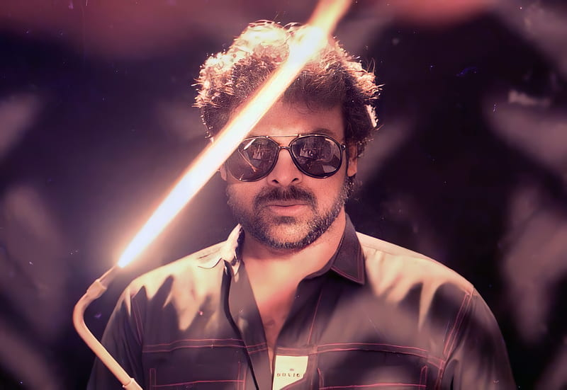
Actor
A major figure in Telugu cinema known for his screen presence, dance and versatility.
Notable:Swayam Krushi • Rudraveena • Indra
Actress
One of Indian cinema's celebrated performers, admired for her expressive and emotional acting.
Notable:Mayabazar • Missamma • Devadasu
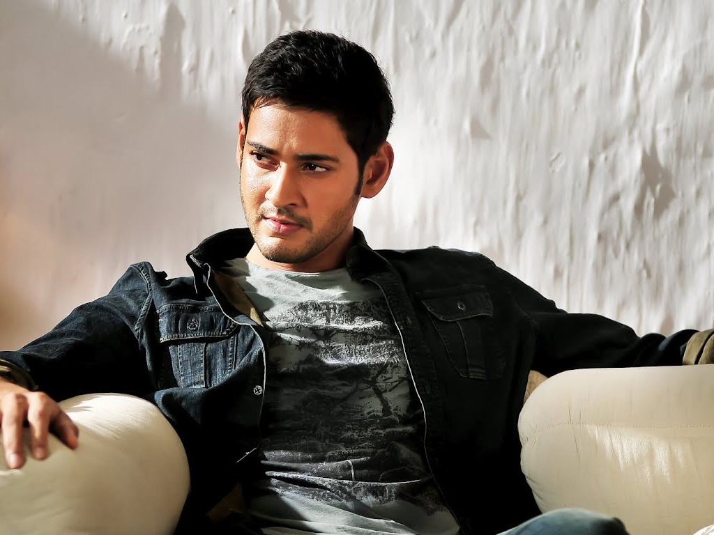
Actor
One of Telugu cinema's prominent stars, known for his understated performances, screen presence and work across action and drama.
Notable:Okkadu • Pokiri • Srimanthudu
Actress
Known for powerful performances and a wide range of roles across Telugu and Tamil cinema, including action, drama and historical characters.
Notable:Arundhati • Vedam • Baahubali
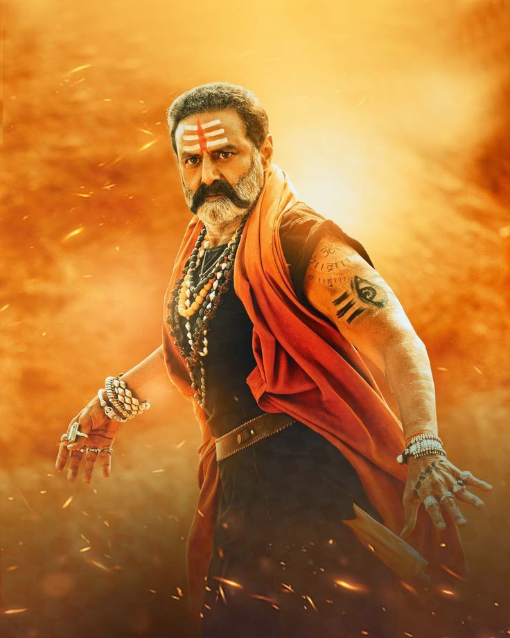
Actor
Known for his intense dialogue delivery, high-voltage action roles, and commanding screen presence in Telugu cinema.
Notable:Samara Simha Reddy • Adithya 369 • Akhanda
Actor
Known for his versatility and performances across romance, action and serious drama.
Notable:Shiva • Annamayya • Manmadhudu
Actor
Known for iconic tragic-hero roles, romantic performances, and pioneering contributions to Telugu cinema.
Notable:Mooga Manasulu • Devadasu • Premabhishekham

Actor
grand, theatrical, and powerful acting style that made him a legendary figure in Indian cinema.
Notable:Gundamma Katha • Dana Vera Soora Karna • Lava Kusa
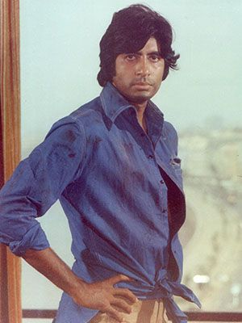
Actor
Known for his commanding screen presence, distinctive voice and wide-ranging roles.
Notable:Sholay • Deewaar • Piku

Actress
Celebrated for combining comedy, drama, emotional expression and exceptional screen presence.
Notable:Chandni • Mr. India • English Vinglish
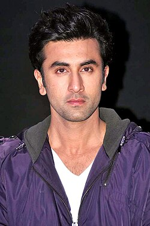
Actor
Is celebrated for his naturalistic, subtle, and internalized acting style that relies on deep emotional resonance rather than over-the-top theatrics.
Notable:Sanju • Rockstar • Yeh Jawaani Hai Deewani
Actor
He blends intense emotional intensity, high-energy charm, and natural spontaneity.
Notable:Swades • Dilwale Dulhania Le jayenge • Don
Actor
Known for experimentation, character transformation and remarkable versatility.
Notable:Nayakan • Indian • Anbe Sivam
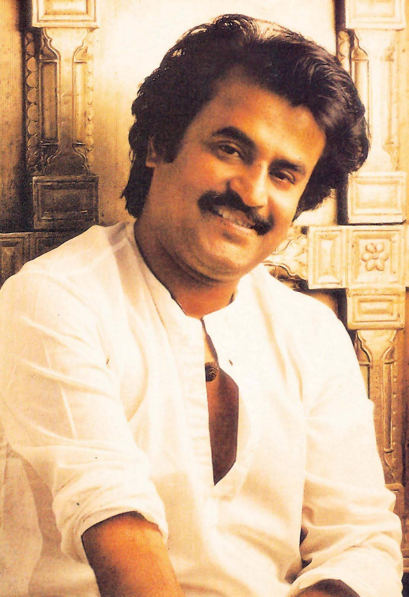
Actor
Defined by high-voltage charisma, lightning-fast stylized mannerisms, and a unique blend of effortless swag and emotional intensity.
Notable:Baasha • Jailer • Dhalapathi • Robo
Actor
Known for natural performances, subtle expressions and extraordinary character range.
Notable:Kireedam • Drishyam • Vanaprastham
Actress
Acclaimed for emotionally powerful performances and her work across cinema and classical dance.
Notable:Manichitrathazhu • Mitr, My Friend
Korean Actor
He acts with deep naturalism, grounding every character in authentic human emotion rather than formal technique.
Notable:Memories Of Murder • The Host • Parasite
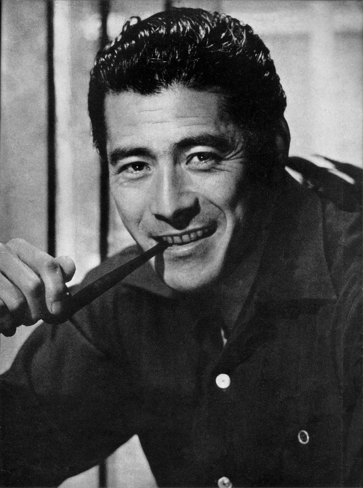
Japanese Actor
He is known for explosive physical energy, raw emotional intensity, and a commanding presence that blended animalistic ferocity with precise control.
Notable:Seven Samurai• Yojimbo • Throne Of Blood
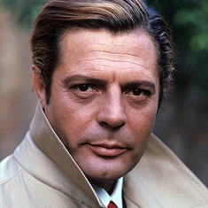
Italian Actor
an effortless blend of melanc holy, understated charm, and profound vulnerability that subverted the traditional, macho Latin-lover archetype.
Notable:La Dolce Vite• Divorce Italian Style • Marriage Italian Style
Freanch Actor
Jean Gabin acted with a rugged, understated, and fatalistic style that defined French Poetic Realism in the 1930s.
Notable:Pépé le Moko• La Grande Illusion • Port Of Shadows
ONE INDUSTRY. ONE LANGUAGE.
Languages may change. Cultures may change. But a great performance can be understood everywhere.